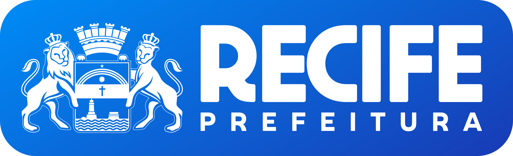
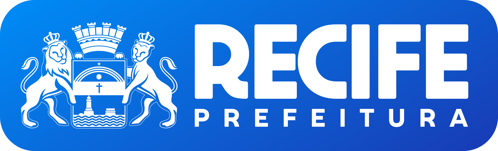

Na Mídia
 


-
Equipe de alunos de Sistemas para Internet fica entre as 10 melhores do Brasil em Hackathon
da Petrobras
"A equipe Mindindex, formada por Anderson Marinho [..], Arthur Levy [...], Beatriz Martins [...], Felipe Liberato [...] e Mateus Sobral [...], [...] competiu com 117 equipes de todo o Brasil, cerca de 500 participantes, ficando entre as 10 melhores equipes em competição da Petrobras..."
Assistir -
Entrevista concedida para 11ª Semana Socioambiental da Unicap
"As mudanças climáticas são transformações a longo prazo nos padrões de temperatura e clima. As atividades humanas têm sido o principal impulsionador das mudanças climáticas, principalmente devido à queima de combustíveis fósseis como carvão, petróleo e gás."
Assistir -
Entrevista concedida à TV Brasil/TV Pernambuco
"Nenhuma descrição foi fornecida."
Assistir -
Católica vence Hacker Cidadão com app para mudanças climáticas
"Anderson Marinho explica que o aplicativo disponibiliza uma rede de rota de fuga, botão de pânico, disparo de localização preciso que pode ser usado em caso de a pessoa estar soterrada ou ilhada. As informações foram trabalhadas a partir do banco de dados do Limcs coletados em comunidades da periferia do Recife localizadas em áreas de risco."
Ler mais -
Modelo em Campanha Publicitária do Sicredi
"Cooperativismo vai além do seu dinheiro, é um movimento financeiro e social em que a união verdadeiramente faz a força. Todos crescem juntos e quanto mais as pessoas se unem, mais fortes elas ficam. Aqui, você é associado e não cliente. Ainda não é um associado?"
Ver mais